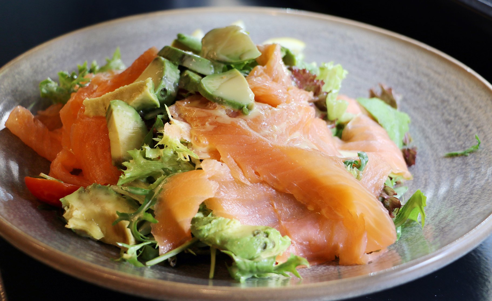
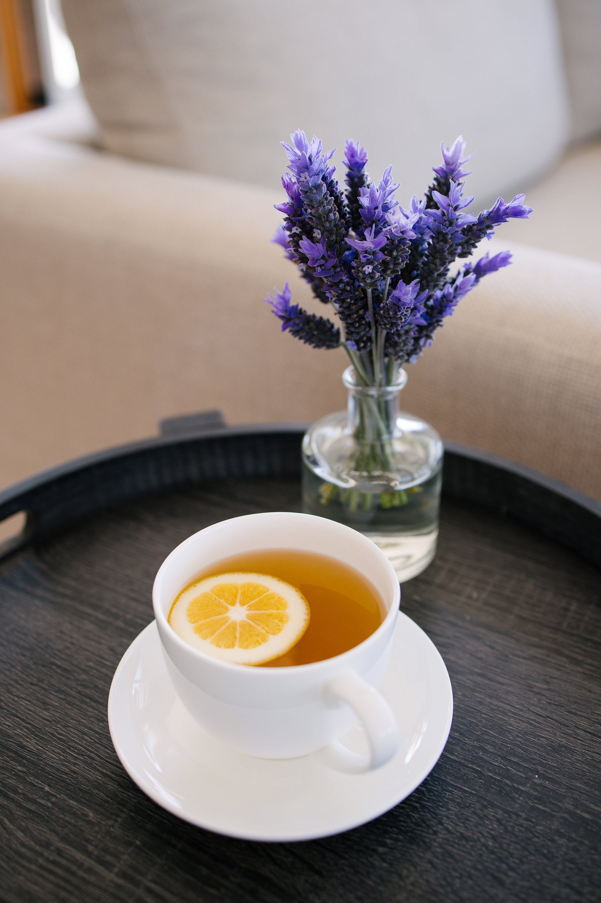

About
How Flourish with Food can support you.
Practical, evidence-based insight.
Wherever you are on your surgical recovery journey, the question of what to eat can feel surprisingly complicated — especially when your energy is low and your appetite even lower.
But it doesn’t have to stay that way. Here you’ll find simple, practical advice to help you feel more confident and informed — all grounded in the most powerful tool you have: the food on your plate.
Whether you’re navigating post-operative fatigue, managing ongoing inflammation, or simply trying to rebuild your strength now that you’re home, you’ll find straightforward, actionable steps that can make a real difference to how quickly and how well you heal.

Everyday support, for the long road.
Even outside of surgery or acute recovery, many people live with lingering inflammation, fatigue, joint pain, or digestive discomfort that affects their daily life.
In my work with clients, I offer personalised nutritional support for people dealing with long-term health challenges. From arthritis and insulin resistance to hormonal changes and the desire to simply feel more vibrant as you age, I can help you find a path forward that’s realistic, sustainable, and based around real food.
